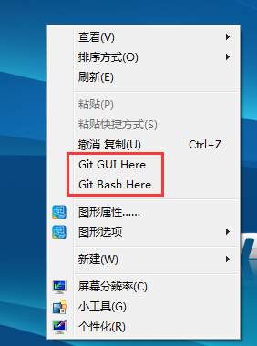

谈谈我做github blog的一些事
很久之前就想自己搭建一个blog来玩玩，一直没信心去弄，就前两天逛贴的时候发现了一个贴（《如何由后台开发转向Web前端开发》http://www.zhihu.com/question/21338653）里面说的内容正合我意，便决心做一下。
（1）首先上github官网https://github.com/注册一个github的账号，如下：

注册提交后github会发封确认邮件到您邮箱，认证过后此账号就开通成功了。
（2）在自己电脑本地安装git，在http://git-scm.com/download/win下载，我下载的是Git-2.7.0-64-bit.exe。点击并默认下一步安装即可，也可以参考《Win7上Git安装及配置过程》http://blog.chinaunix.net/uid-25806493-id-3319781.html进行配置。安装完后，在电脑空白处右击鼠标会出现github的Git Gui（可视化界面）和Git Bash（命令行界面）。如：

（3）用已注册的账号密码在https://github.com/login登录上github。如：
登录之后就进入以下界面：
点击New Repository新建一个仓库：
填入Repository名字、描述、勾选初始化README，最后点击Create repository就已创建了一个仓库了。选择该repository的setting进行配置，如下：
拉到此页面下边有一个自动生成页面器Launch automatic page generator，点击它。
进入以下页面，点击选择样式Continue to layouts，这个样式和上面的文字内容都可以随便选，因为以后还是要自己clone这个项目来改的。当然你也可以用它默认的样式。
选中你喜欢的样式风格，点击发布页面Publish page即生成了一个首页。
再返回setting就可以看到你页面的网址，点击就可以看到你的页面了，如下
（4）以上第三步就建好了一个默认的博客首页，接下来就是把在github上面新建的这个repository下到本地改成你喜欢的样式，就可以随心所欲的写你想写的博客了。
我在电脑d盘的根目录下建了一个名为mygit的文件夹，即D:\mygit，用它来放置我github上的项目。在D:\mygit目录空白处右击鼠标，选中Git Gui Here，并点击克隆存在的仓库clone existing repository。如下：
将在github查到的https那里的链接复制下来粘贴到Source Location，Target Directory是你自己需要放置项目的地方，我放在了D:\mygit\aimeelin，然后点击clone即可。
对下到本地的项目进行修改，如要提交到github接下来就可以按照Rescan、Stage Changed、Sign Off、Commit、Push的顺序提交即可。具体我有参考《Git可视化极简易教程 — Git GUI使用方法》http://www.runoob.com/w3cnote/git-gui-window.html
（5）到此为止，我自己的简易blog就搭建完了。其实过程中，我有试过用Jekyll来搭建（参考过《搭建一个免费的，无限流量的Blog----github Pages和Jekyll入门》http://www.ruanyifeng.com/blog/2012/08/blogging_with_jekyll.html），也有用到markdown（参考过《用静态页面生成静态博客》http://isnowfy.github.io/about-simple-cn.html）。但是效果都没有如我所愿，以后会再看看。总的来说这个过程可能有很多不足或者错误的地方，但也是我一步步探索出来的，为自己感到欣慰，接下来好好丰富这个blog。